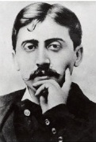

Fransız roman yazarı Marcel Proust (1871-1922), neredeyse sadece bir eseriyle hatırlanır. Ama bu eser şöhretini sağlamlaştırmak için yeterliydi. Dev romanı Kayıp Zamanın İzinde yirminci yüzyılın en büyük edebî eserleri arasında yer alır.

Proust, Paris’te varlıklı yetişme tarzının verdiği imkanla edebiyat ve hukuk alanında esaslı bir eğitim aldı. Genç yaşından beri kuvvetli sosyal çevrelerde bulundu, Parisli elit tabakanın takıldığı yerlerde görüldü. 1896’da ilk kısa hikâye derlemesini yayınladıktan sonra, Proust, sonraki ustalık eseri için temel olan Jean Santeuil adlı otobiyografik romanı üzerinde çalıştı.
Bozulan sağlığı ile ailesinin ölümünün bitmeyen acısı arasında Proust, 1909’da Kayıp Zamanın İzinde üzerinde çalışmaya başladı. Roman, 3.000 sayfadan fazla uzunluğuyla ve 2.000’den fazla karakterin kurgusuyla gerçekten devasaydı. 1913’ten 1927’ye kadar yedi cildi basılan kitap, dünyanın daha önce gördüğü hiçbir romana benzemiyordu; gerçekten de pek çok yayınevi ilk bölümünü, nereye varacağından emin olmayarak reddetti.
Onun kim olduğunu neyin belirlediğini araştıran, gençliğinden hatıraları açığa çıkaran ve sonunda bir roman yazmak için hazırlanan genç bir adamın gelişimini takip eden Kayıp Zamanın İzinde, temelde otobiyografiktir. Edebî bir kitap olduğu kadar felsefi ve psikolojik de bir eserdir. Roman boyunca anlatıcı aşk, kimlik, cinsel belirsizlik, estetik, sanat ve diğer konular üzerinde derin düşünür. Çoğu insan anlatıcıyı Proust için bir vekil olarak görmesine rağmen, okuyucunun gerçekte yazarı ve anlatıcıyı aynı görüp görmemesi gerektiği sorununu belirsiz bırakır.
Başlığın da gösterdiği gibi roman, zaman ve hatıra ile derinden ilgilidir. Proust, zamanı anların düzenli, doğrusal ilerlemesinden ziyade akıp giden, şekilsiz bir bütün olarak algılar. Sıklıkla önceleri kaybolan hatıralar, bazı duyusal ipuçları sonucunda anlatıcıya hızla geri döner. Bir ünlü paragrafında, anlatıcı çaya batırarak yemeye alıştığı küçük bir Fransız çöreğini tatması üzerine çocukluk anılarını canlı bir biçimde hatırlar. Bu deneme, Proust’un ölümünden sonra bile uzun süre kullanıldı. Çünkü sayısız modernist yazar da kendi başyapıtlarında zaman ve hatıranın araştırmasını yaptılar.
EK BİLGİLER:
1. Proust, “Kayıp Zamanın İzinde”nin ilk cildini ailesinden kendisine kalan parayı kullanarak bastırdı.
2. 1897-1899’daki adı kötüye çıkmış Dreyfus’la ilişkisi sırasında Proust, ihanetle haksız yere hapse atılan Fransız-Yahudi kökenli ordu görevlisi Alfred Dreyfus’un adına dilekçeler organize etmek için kayda değer bir zaman ve para harcadı.